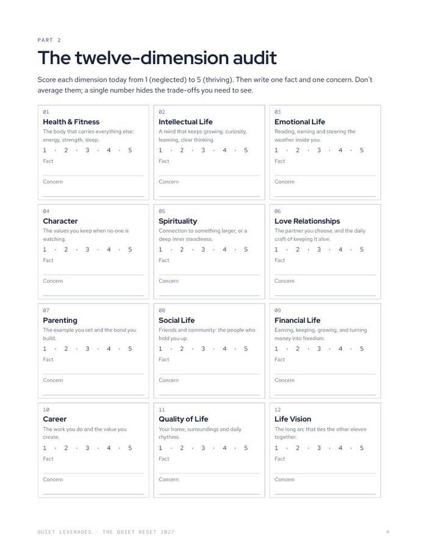
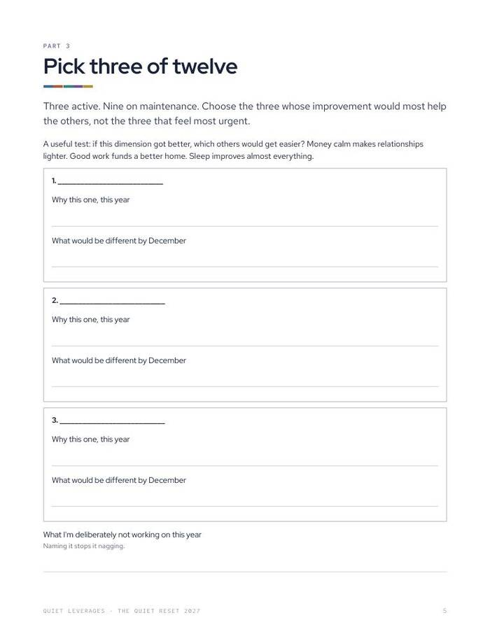
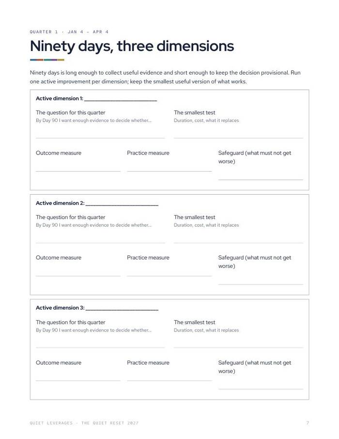
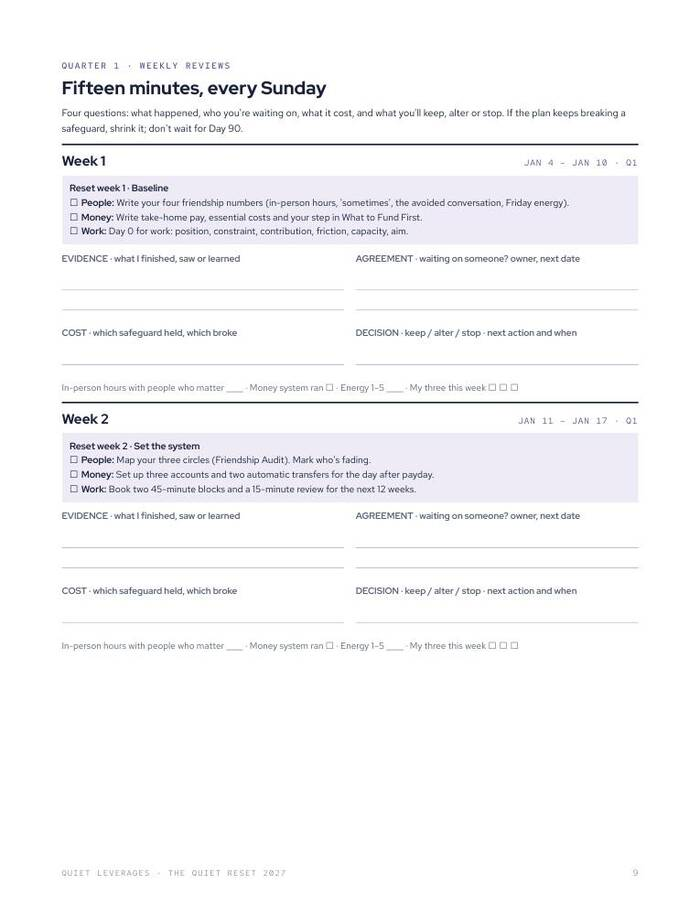

Most planners fail by February. This one asks you to pick three goals and keep the other nine alive.
Review 2026, score twelve areas of your life, pick three to work on and put the rest on a maintenance minimum. Four ninety-day cycles, 105 minutes a week.
PDF for print or tablet, Google Sheet and Notion. Start with the six short sessions in 00 Start here.

Pick three, not twelve
Score all twelve dimensions, work on the three that matter most, and keep the other nine on a simple minimum.
105 minutes a week
Two 45-minute blocks for your three and a fifteen-minute Sunday review. That is the whole commitment.
Everything in one download
The planner, a Google Sheet dashboard, a Notion template, three playbooks, three kits and three quick tools.
page planner
life dimensions scored
a week, in total
of managers were engaged at work in 2025, down from 31% in 2022. Doing everything right and still feeling behind is common, and a longer to-do list does not fix it.
Gallup, 2026What changes after the first Sunday
A year that starts with a review
Write what happened, what it cost, and what to keep, alter or stop before you decide what 2027 means.
Focus without neglect
Three active dimensions get your effort. The other nine get a small standing minimum, so nothing quietly falls apart.
Four fresh starts
Ninety-day cycles, each with a question, a smallest test and a Day-90 decision. A missed week does not sink the year.
A weekly rhythm you can keep
Fifteen minutes every Sunday to record what finished, what you agreed to, what it cost and what you decide.
The planner, the playbooks and the tools behind it
One download. Start with the planner and the 90-day reset, and open the rest when you need it.
- The Quiet Reset 2027 planner. PDF for print or tablet, 48 pages, fully linked on a tablet.
- Google Sheet and Notion. The planner as a Google Sheet with a dashboard, and as a Notion template.
- The 90-day work, money and people reset. One move a week for your first quarter.
- The AI Coach Pack. A five-minute setup and 30 prompts.
- Guided Sunday Reviews. 13 short guided reviews, written as scripts.
- Three playbooks. The Social Architecture Playbook, The Finance Architect, The Career Playbook.
- Three kits. The 30-Day Friendship Practice, The Raise Kit, The Couples Money Reset ($57 on their own).
- Three quick tools. The Friendship Audit, What to Fund First, The Stay-or-Go Worksheet.




Five moves, in this order
Review 2026
Write what happened, what it cost, and what to keep, alter or stop.
Score twelve dimensions
Rate each area 1 to 5 with one fact and one concern.
Pick three
Choose the three whose improvement would help the rest. Nine go on maintenance.
Run four 90-day cycles
Each quarter: a question, a smallest test, three measures, a Day-90 decision.
Review every Sunday
Two 45-minute blocks for your three, plus fifteen minutes. 105 minutes in all.
A good fit if the plan keeps outgrowing the week
Use this if
- You set goals every January and lose the thread by February.
- You want one system for work, money and people, not three apps.
- You can spare about 105 minutes a week and want that time to count.
Skip it if
- You want daily motivation or a pep talk. This is a planner you fill in.
- You want a single-topic tool. The small tools cover one area each.
- You are looking for financial, employment or mental-health advice. This is general education.
Why a planner that protects the rest matters
of managers were engaged in 2025, down from 31% in 2022.
Gallup, 2026of US adults began 2026 feeling financial stress.
NEFE, Jan 2026of adults aged 30-44 are frequently or always lonely, the highest of any age group.
Harvard Making Caring Common, 2024What readers say about The Quiet Reset 2027
The three kits alone cost more than the early-bird price
Prices are from the Gumroad listings. The bundle also holds the planner, the 90-day reset, the AI Coach Pack, the Sunday reviews, three playbooks and three quick tools.
The 30-Day Friendship Practice, The Raise Kit and The Couples Money Reset at $19 each.
Everything in the download, until December 31. Use code EARLYBIRD.
Standard price once the early-bird ends.
Plan 2027 on paper before it starts
One price for the whole system. Early-bird pricing runs until December 31.
- The Quiet Reset 2027 planner (PDF, 48 pages)
- Google Sheet dashboard and Notion template
- 90-day reset, AI Coach Pack, 13 Guided Sunday Reviews
- Three playbooks, three kits ($57 on their own) and three quick tools
Early-bird $47 until December 31 with code EARLYBIRD ($20 off), then $67. Opens Nov 24. Instant download on Gumroad.
Before you decide
What format is it?
A PDF planner for print or tablet (48 pages, fully linked on a tablet), plus a Google Sheet with a dashboard and a Notion template. Everything arrives as one instant download on Gumroad.
How much time does it take each week?
105 minutes: two 45-minute blocks for your three dimensions and a fifteen-minute Sunday review. The first week has six short sessions in 00 Start here.
Do I have to fill in all twelve dimensions?
You score all twelve once, then pick three to work on. The other nine stay on a short maintenance minimum, so you are not asked to improve everything at once.
Who is it for?
Anyone who wants one plan for work, money and people and keeps losing it by February. It suits a tablet or a printer.
What are the Guided Sunday Reviews?
Thirteen short guided reviews, written as scripts you read through each Sunday.
Is this financial or career advice?
No. It is a planning tool and general education, not financial, legal, employment or mental-health advice.
Pick three. Keep the other nine on maintenance.
Review 2026, score twelve dimensions, and start your first ninety days.
Get The Quiet Reset 2027Early-bird $47 until December 31 with code EARLYBIRD ($20 off), then $67. Opens Nov 24. Instant download on Gumroad.